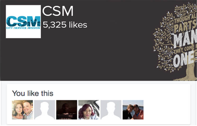

Connect

We provide an effective urban ministry experience that transforms lives, influences churches and communities, and honors Christ.
28
Years on
mission
18,15,16
Participnats
sent out
11
Cities
Served
9371
# Of Mission
Group
600
Hours of
Service

If Christians are to make an impact for the Kingdom in the 2nd century, they must live out the call to be Jesu's hands and feet to the poor and needy. CSM gives young people and adults the opportunity to do just that in North America's inner-cities.